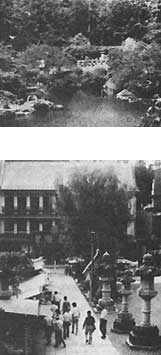

Those who were unable to join our April "Study Tour of the Plants and Gardens of Japan", but who still have a hankering to go to the Land of the Rising Sun, may well find the following informat ion helpful in getting to know not only the country, but the Japanese people as well. In fact, the author of this report-H. William Bruce-and his wife stayed in Japanese homes during 19 of the 21 days of their vacation . . . by visiting with Servas hosts.
"Servas is a nonprofit, nonpolitical, interracial, cultural organization, which was founded in 1948, and now operates in about 60 countries," writes Mr. Bruce. "Its philosophy is to create understanding among people of different nations, by allowing them to meet and talk with one another. Members are provided with lists of Servas hosts and their interests, and then it's up to the traveler to write and make arrangements for a two-night visit. After all," he notes, "what better way is there to learn about people of other lands than by sharing their homes, foods, and activities?
"And if you can't afford the time or money for travel yourself," Mr. Bruce adds, "you can be a host to foreign guests. We live just outside San Francisco, and-last year-we had more than a dozen people from all over the world come by for short visits, including a Dutch couple, who had traveled from New York by bike!
"We learned-as both Servas guests and hosts-that all people are really very similar when one gets to know them."
It costs $30 a year to become a Servas traveler, and the organization requests a voluntary donation of $10 a year from folks who want to act as hosts. (After applying for membership, you'll be interviewed by a Servas volunteer.) For more information, write to U.S. Servas, Dept. TMEN, 11 John Street, Room 406, New York, New York 10038.
April 15 marked the gala debut of Tokyo's own Disneyland. Just a scant 20 minutes from downtown, the new attraction will be open daily from 9:00 a.m. to 10:00 p.m. in July and August. (It'll be closed on Tuesdays, starting in September.) Admission is roughly $15 for adults, $13 for high-school students, and $10 for children. Limousine buses will commute to the site from major hotels, and there's also access by subway and by shuttle bus.
This new Disneyland is the largest park of its kind in the world: The amusement center itself encompasses 115 acres . . . with 92 additional acres for parking. (The local Mickey Mouses, by the way, will speak English as well as Japanese.)
If you're just passing through Tokyo's international airport, near the town of Narita, and have several hours between flights-or, perhaps, have planned a layover at one of the airport hotels for a day or two-you can arrange an informal visit with a typical Japanese family. (At least one member of any of these families can speak a foreign language.)
To take advantage of this gesture of international goodwill, contact the Narita City Tourist Information Office, Dept. TMEN, 839 Hamasaki-cho, Narita City, Japan, or the Japanese National Tourist Organization's office at Narita's Airport Terminal Building.
While this item isn't one of our usual lowcost tips, it might come in handy if you need to arrive in the Orient rested and relaxed. Japan Air Lines has introduced a Sky Sleeper Service, which offers totally private, hotelstyle beds situated on the upper decks of some of its weekend New York-to-Tokyo 747 jets. This service, however, is available only to first-class passengers at a surcharge . . . and space is limited, so early reservations are suggested.
And, speaking of Japan Air Lines, its new, expanded, and updated edition of the $2.00 guidebook, Japan Unescorted, is now available from JAL Literature Distribution Center, Dept. TMEN, P.O. Box 10618, Long Island City, New York 11101.
Remember, you receive a free one-year subscription to MOTHER if your travel tip is published in this column. Write to Getting There, THE Mother Earth News(restricted) 105 Stoney Mountain Road, Hendersonville, North Carolina 28791.
|
 The grace and beauty of the Japanese nation are evident in both the country... and the city. |
|
|